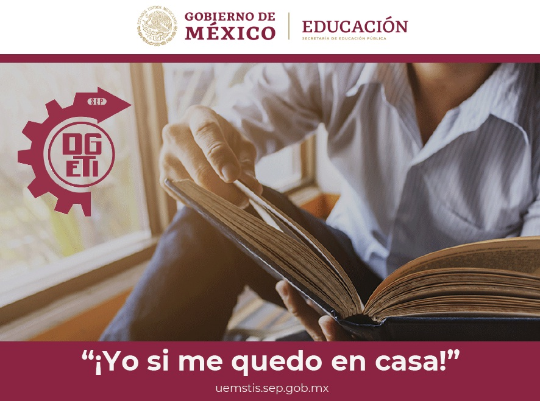
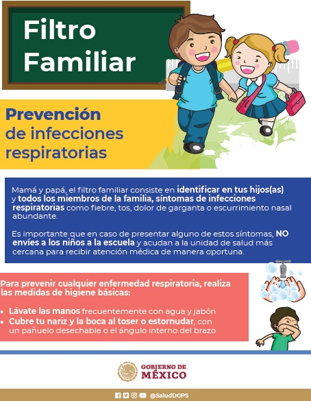
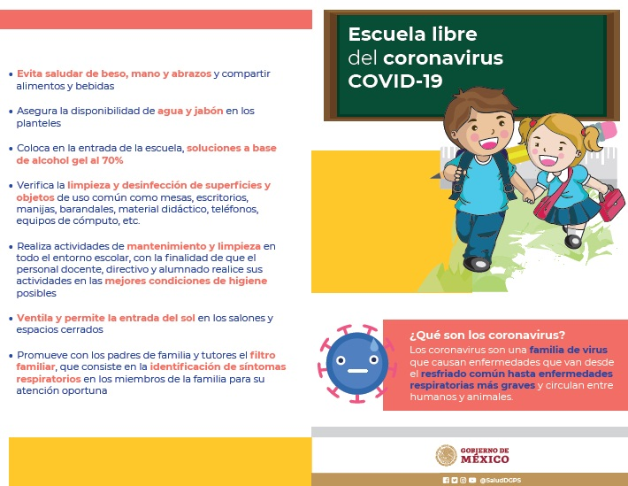
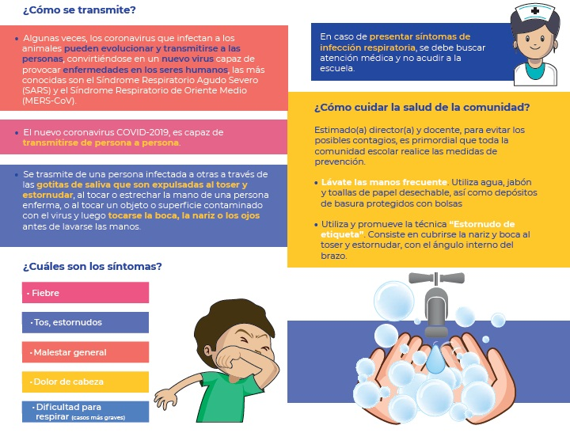

¡BIENVENIDOS! |
|
ATENCION BECAS
Ciudad Nezahualcóyotl, Estado de México a 22 de mayo de 2020CENTRO DE BACHILLERATO TECNOLÓGICO industrial y de servicios No. 6 “LEONA VICARIO” Estimados alumnos, la Coordinación Nacional de Becas para el Bienestar Benito Juárez informa que está trabajando en una estrategia para enviar los pagos de manera electrónica, por lo que debes estar atentos a la información publicada en medios oficiales.
Agradeciendo su apoyo, quedamos al pendiente. A T E N T A M E N T E DIRECCIÓN SUBDIRECCIÓN ACADEMICA A T E N T A M E N T E SERVICIOS ESCOLARES DALE CLICK PARA VER
*CURSO EDMODO:
DALE CLICK PARA VER
CNAD Difusión:https://www.youtube.com/channel/UCJNI6U1QkAYl__3caxtXmrg/videos Videos para Docentes: https://www.youtube.com/playlist?list=PLutbWAFPCSuU-m8O-GsngO4-hTrbswlK8 Videos para Estudiantes:https://www.youtube.com/playlist?list=PLutbWAFPCSuXSTS-2yrO5KjD2Tv3SlXSM Los temas desarrollados son los siguientes: Docentes 1. Bienvenida, crear cuenta https://youtu.be/3SYW-eCWNa0 2. Administrar miembros https://youtu.be/jtS_mFDqsXw 3. Biblioteca y carpetas https://youtu.be/dx5nZfVHRIA 4. Mensajes y asignaciones https://youtu.be/ug-FbTCaSVM 5. Crear y revisar una prueba https://youtu.be/C6dA7JZhxZA 6. Calificar tareas(asignaciones) https://youtu.be/7qVJm371rbs 7. Cambiar y agregar calificaciones https://youtu.be/bqzZ37fwSlA 8. Agregar una clase https://youtu.be/dyMfhrZd7ZY 9. Crear periodo de evaluación https://youtu.be/uZglTPYxy14 Estudiantes 1. Crear cuenta https://youtu.be/qfnXCzxBw4U 2. Secciones https://youtu.be/zLt-n6TkGuo 3. Perfil https://youtu.be/Ra8mzJK_cSQ 4. Clases https://youtu.be/QN_jjqnfMVI 5. Revisar y entregar asignaciones https://youtu.be/fJtxdOabn0s 6. Hacer una prueba https://youtu.be/s4f_csb-_4I 7. Calendario https://youtu.be/WOyn3jFHplQ 8. Mochila https://youtu.be/JX77p4xILF4 9. Mensajes https://youtu.be/VnVAMoU1De4 ALUMNOS DEL PLANTEL: DALE CLICK PARA VER Los requisitos para participar son los siguientes: Para tener derecho a participar en los desafíos COVID-19 de Minecraft de México, todas las inscripciones deben cumplir con los requisitos básicos: * JOVENES EN CASA, CUADERNILLO FASCICULO 1 JOVENES EN CASA, CUADERNILLO FASCICULO 2 OVENES EN CASA, CUADERNILLO FASCICULO 3 JOVENES EN CASA, CUADERNILLO FASCICULO 4 JOVENES EN CASA, CUADERNILLO FASCICULO 6 PROYECTO TRANSVERSAL CUARTO SEMESTRE CONFERENCIA DE ALFABETIZACION DIGITAL PARA ALUMNOS CONFERENCIA USO DE CLASSROOM PARA ALUMNOS CRONOGRAMAS DE ACTIVIDADES A DISTANCIA POR CONTINGENCIA COVID-19 Propuestas del Servicio Nacional de Bachillerato, Prepa en Línea-SEP * SERVICIO SOCIAL: Ciudad Nezahualcóyotl, Estado de México a 04 de abril de 2020 Estimada comunidad escolar. En el marco del Acuerdo por el que se declara como emergencia sanitaria por causa de fuerza mayor, a la epidemia de enfermedad generada por el virus SARS-CoV2 (COVID-19), publicado el 30 de marzo del presente en el Diario Oficial de la Federación, y privilegiando la integridad física y salud del estudiantado, se les pide a todos los alumnos (a) retirarse de forma inmediata de los servicios en donde prestan el Servicio Social, en cualquier Empresa o Institución de salud, ya no presentarse. lavarse las manos con jabón de manera constante por al menos 20 segundos, evitar tocarse el rostro, al toser o estornudar cubre tu boca con la parte interna del codo, mantener tu casa ventilada y limpia, desinfectar los utensilios de uso común. "Importante todos debemos estar en casa"A T E N T A M E N T E ÁREA DE DIRECCIÓN *  * * Ciudad de Nezahualcóyotl, Estado de México, a 14 de marzo de 2020 AVISO IMPORTANTE A TODA LA COMUNIDAD ESCOLAR Derivado de la información difundida por el Secretario de Educación Pública, Esteban Moctezuma Barragán y del Subsecretario de Prevención y Promoción de la Secretaría de Salud Pública del Gobierno de México, Hugo López-Gatell Ramírez, se toman las siguientes medidas de prevención y protección ante el COVID 19. • Se instalará una comisión de salud dentro del plantel conformando un Consejo de Participación Escolar, que tendrá como objetivo la instalación de los filtros escolares, para coadyuvar la higiene escolar. • Se ampliará el receso educativo desde el 23 de marzo, reanudando actividades hasta nuevo aviso. • Con la comunidad escolar se determinarán las estrategias para poder continuar con el desarrollo de competencias académicas para los alumnos. • Podrán consultar las recomendaciones y las medidas sanitarias que correspondan en la página: www.gob.mx/coronavirus. • Se establecerá un filtro de forma corresponsable escuela – madres y padres de familia, que deberán cuidar que al llegar al centro escolar los alumnos y las alumnas hayan cumplido con un reconocimiento de higiene y detección de síntomas sospechosos relativos a los protocolos de seguridad que ha emitido la Secretaría de Salud. • En caso de detectar síntomas sospechosos de acuerdo con el protocolo de seguridad emitido por la Secretaria de Salud, la madre, padre de familia y/o tutor deberán entregar una manifestación que exprese que el alumno puede acudir a clases. • Se promoverá un segundo filtro en el salón de clases, para evitar que algún alumno este enfermo. • Se suspenden todas las actividades no esenciales como: académicos (entrega de boletas), actos cívicos, festivales culturales, y deportivos. Esperamos contar con su apoyo para reforzar las medidas de prevención y atención prioritarias para evitar el contagio. les pedimos estar pendientes de la información generada de esta contingencia en las paginas oficiales de la SEP, la Secretaria de Salud y de nuestro plantel. ATENTAMENTEDIRECCIÓN ESCOLAR *  *  *  * Dale click aqui para ver los HORARIOS DE CLASES POR GRUPOS * AVISO DE PRIVACIDAD INTEGRAL * Dale click aqui para ver Programa de formación docente de educación media superior * Invitacion a Repensar las matemáticas http://transmisionesenlinea.ipn.mx/ https://repensarlasmatematicas.wordpress.com/13ciclo/sesion-s105 * * BECAS, consulta aqui las nuevas convocatorias * Dale click a cada imagen para ver cada tema Si no tienes instalado un lector de archivos PDF, aqui lo puedes descargar. * |